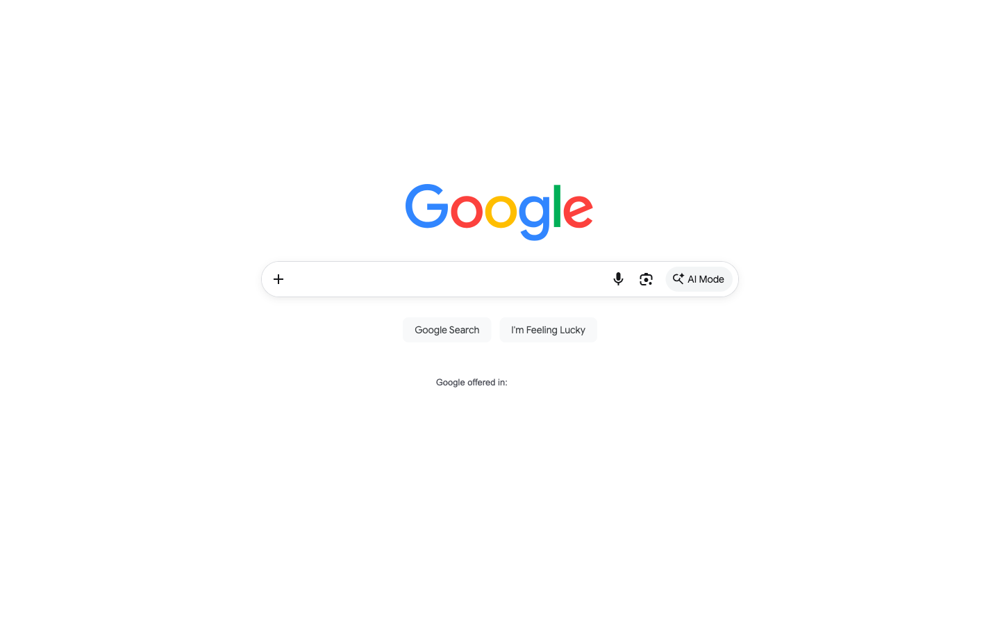
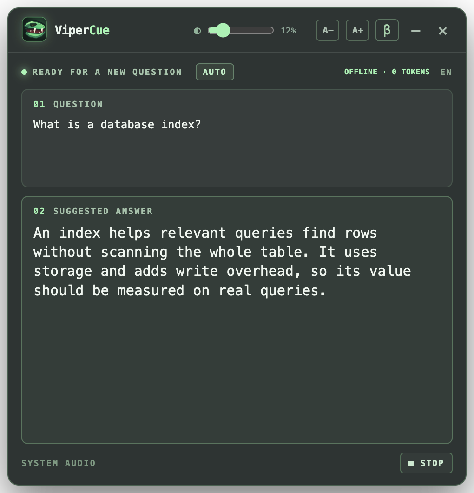

ViperCue over a shared browser tab
Illustrative comparison built from a Google.com tab capture and an actual ViperCue window capture.
Your local display Tab + desktop overlay


The candidate sees the floating question and answer.
Selected-tab share Remote view illustration
Only the chosen browser tab is included in the tab stream.
This is a selected-tab demonstration, not a live Meet attendee capture. Always inspect the meeting preview. Entire-screen sharing may include the overlay.